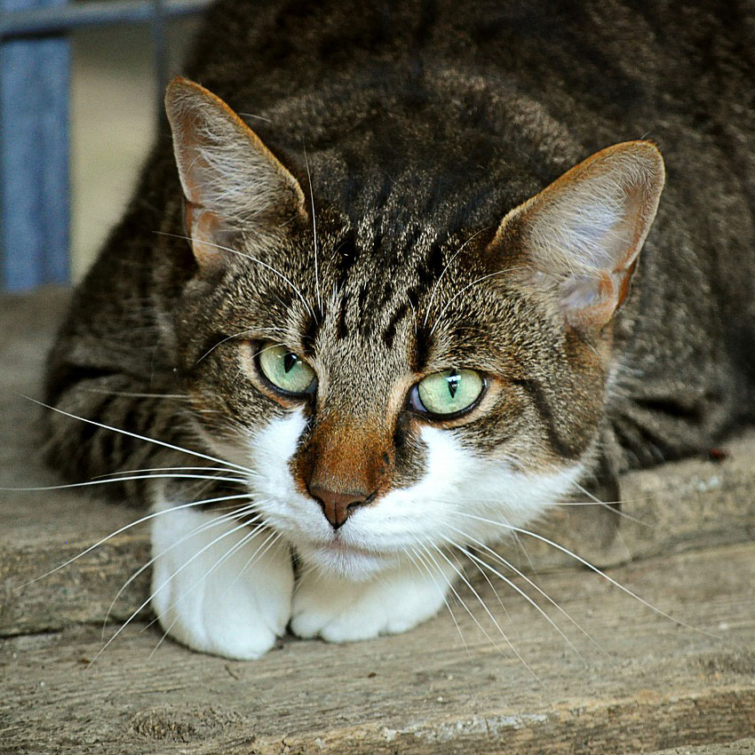
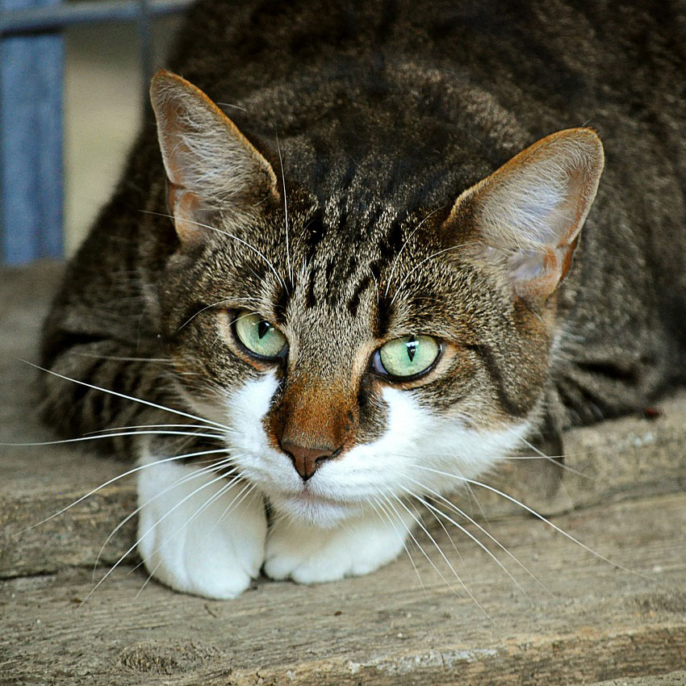

Ghost

- Ghost is a very energetic puppy looking for lots of attention
- 4 months old
- Breed: West Highland Terrier
- Very lively and needs a lot of training
- Ideal for a house with no other pets.
Rescue charity: The Doggie Sanctuary
Find Out More
Lola

- Lola is looking for a quiet home to settle into.
- 8 years old
- Breed: Golden Retriever
- Quiet and loves her bed
- Gets on well with other cats and dogs
Rescue charity: Furever Homes
Find Out More
Kenny

- 6 years old
- Breed: Terrier crossbreed
- Recently brought in as a stray
- Very lively but likes his sleep
- Not suitable for a home with cats
Rescue charity: Furever Homes
Find Out More
Freddy

- 3 years old
- Breed: Crossbreed
- Energetic and lively
- Gets on well with other cats and dogs
Rescue charity: The Cat Rescue
Find Out More
Bruce

- Bruce is a very well behaved Labrador looking to settle down
- 5 Years Old
- Breed: Golden Labrador
- Gets on very well with children
- Can be rehomed in a house with cats/dogs
Rescue charity: The Doggie Sanctuary
Find Out More
Cindy

3 Years old.
Black Retriever
Black Retriever
Find Out More
Misty


Misty is a 3 year old cross recently brought in as a stray.
Black Retriever
Black Retriever
Find Out More
Ruby

3 Years old.
Maine Coon
Maine Coon
Find Out More